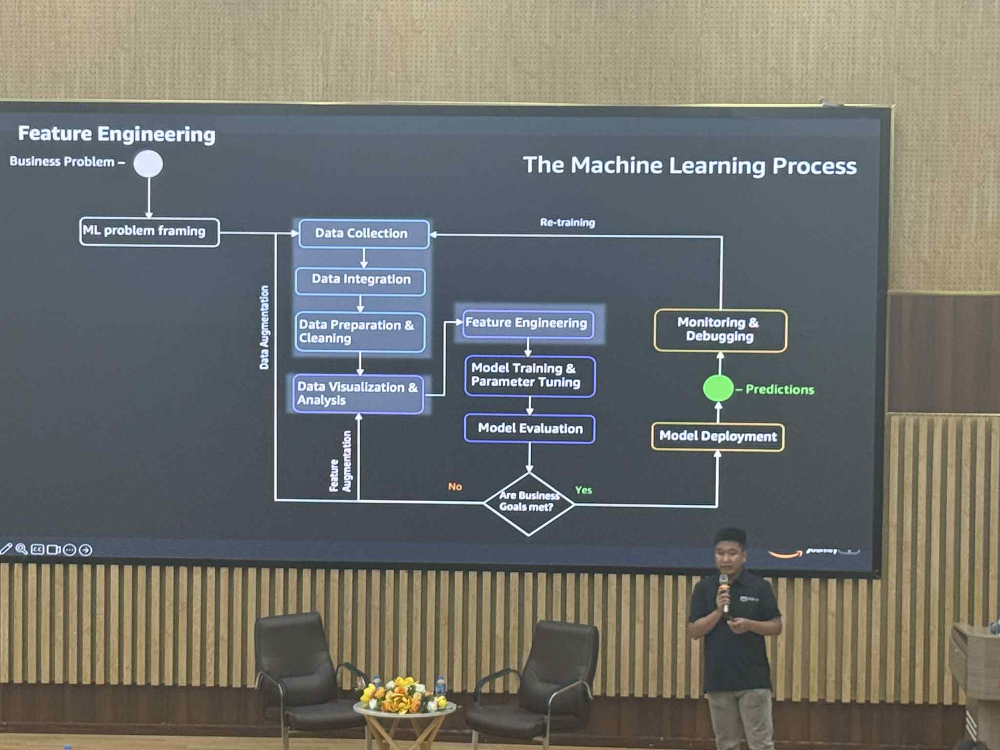
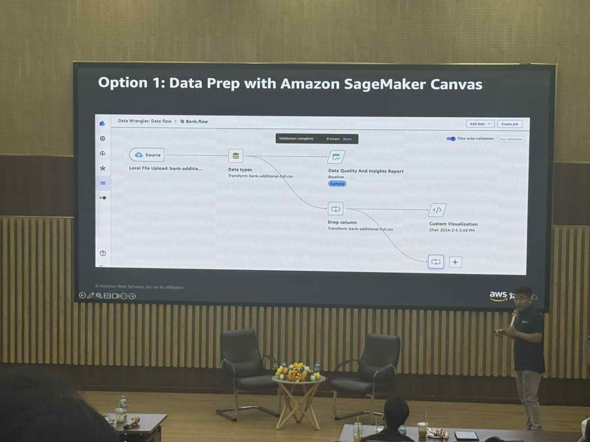
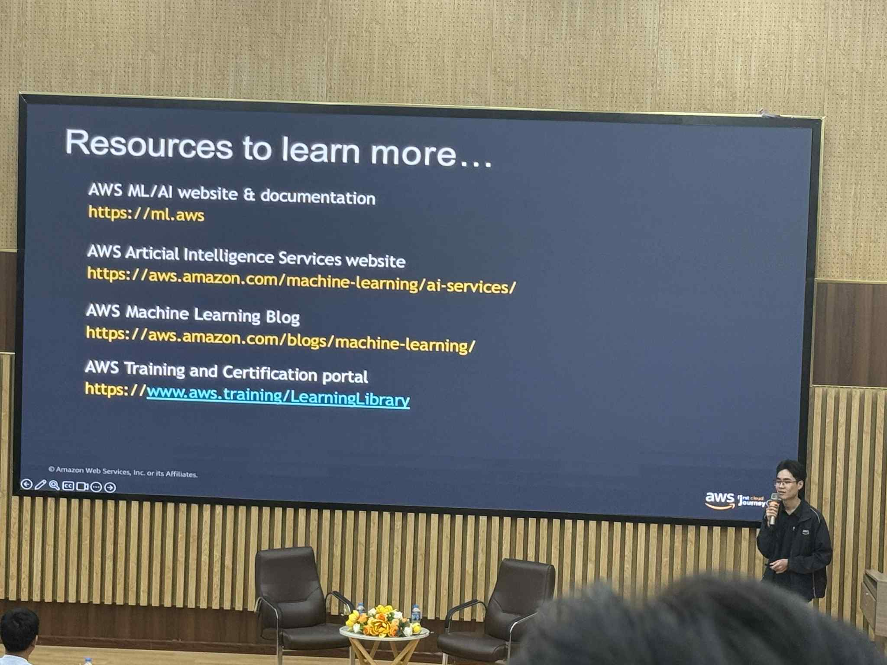

Sự kiện 1
Báo cáo tổng kết: “Data Science on AWS”
Mục tiêu sự kiện
- Khám phá cách AWS giải quyết các bài toán dữ liệu bằng dịch vụ của mình
- Giới thiệu tổng quan về các Managed AI Services và các trường hợp sử dụng thực tế
- Chuẩn bị dữ liệu với Amazon SageMaker
- Ứng dụng XGBoost trong SageMaker Studio Notebooks
- Khai thác AutoML không cần code với SageMaker Canvas
Diễn giả
- Văn Hoàng Kha – Cloud Solutions Architect, AWS User Group Leader
- Bạch Doãn Vương – Cloud DevOps Engineer, AWS Community Builder
- Đoàn Nguyễn Thanh Hòa – Giảng viên CF, Đại học FPT TP.HCM
Nội dung nổi bật (Key Highlights)
Amazon Comprehend và Amazon Translate
Phân tích và dịch văn bản bằng công nghệ học sâu (Deep Learning)
- Xử lý nhiều loại tài liệu như email, chat, mạng xã hội, cuộc gọi… và tự động trích xuất thông tin hữu ích.
- Các trường hợp sử dụng phổ biến của Amazon Comprehend:
- Xử lý tài liệu thông minh
- Tự động hóa quy trình email
- Phân loại và định tuyến ticket hỗ trợ khách hàng
- Gắn thẻ tài liệu và nội dung media
- Phân tích cảm xúc khách hàng
- Phân tích cuộc gọi tổng đài
- Phát hiện và ẩn thông tin nhạy cảm (PII)
Amazon Translate
Dịch máy thần kinh (Neural Machine Translation)
Tính năng chính:
- Hỗ trợ ngôn ngữ rộng: 4970 cặp ngôn ngữ dịch X↔Y
- Độ trễ thấp: <150ms cho mỗi câu
- Bảo mật dữ liệu: mã hóa và quản lý truy cập đầy đủ
- Phủ sóng khu vực rộng: 17 vùng AWS
- Tùy chỉnh dịch: dùng Custom Terminologies và Active Custom Translation
- Dịch hàng loạt: hỗ trợ định dạng DOCX, PPTX, XLSX, XML, HTML, TXT
- Mô hình huấn luyện đa lĩnh vực: 11 domain khác nhau
- Tính phí theo sử dụng: dễ tích hợp qua API
Trường hợp sử dụng:
- Bản địa hóa nội dung: tài liệu doanh nghiệp, phụ đề video, lưu trữ
- Giao tiếp: tương tác khách hàng, chat trong game, bài viết mạng xã hội
- Phân tích văn bản: Voice of Customer, phân tích media, eDiscovery
Amazon Polly
Dịch vụ chuyển văn bản thành giọng nói (Text-to-Speech)
Amazon Polly sử dụng công nghệ học sâu để tổng hợp giọng nói tự nhiên như con người.
Tính năng:
- Text-to-Speech (TTS)
- Ngôn ngữ đánh dấu SSML
- Tùy chỉnh từ vựng (Lexicons)
- Dấu giọng nói (Speech Marks)
- Tạo giọng thương hiệu (Brand Voice)
Ứng dụng thực tế:
- Đọc tin tức, tài liệu đào tạo
- Tổng đài thoại/IVR
- Podcast, học ngoại ngữ
- Dẫn đường, nhắc việc, công cụ hỗ trợ người khuyết tật
Amazon Transcribe
Dịch vụ nhận dạng giọng nói tự động (ASR)
- Chuyển nội dung âm thanh/video thành văn bản
- Hỗ trợ cả ghi âm sẵn và phát trực tiếp theo thời gian thực
Amazon Lex
Dịch vụ xây dựng chatbot và giao diện hội thoại thông minh
Tính năng:
- Dễ sử dụng
- Hiểu ngôn ngữ tự nhiên chính xác
- Tích hợp sẵn với hệ sinh thái AWS
- Tiết kiệm chi phí
Amazon Rekognition
Phân tích hình ảnh và video để phát hiện đối tượng, khuôn mặt, cảnh vật và nội dung không phù hợp.
Amazon Personalize
Cá nhân hóa trải nghiệm người dùng
- Triển khai hệ thống gợi ý nhanh chóng
- Phản ứng theo hành vi người dùng theo thời gian thực
- Dễ dàng tích hợp với hệ thống hiện có
- Giảm thời gian ra thị trường nhờ dịch vụ ML được quản lý
Feature Engineering

Chuẩn bị dữ liệu với Amazon SageMaker Canvas

Ứng dụng vào công việc — Bài học rút ra từ Key Highlights
1. Hiểu dữ liệu & Tự động hóa (Amazon Comprehend, Translate)
Bài học:
Khai thác dữ liệu phi cấu trúc là nền tảng cho việc ra quyết định thông minh.
Ứng dụng:
- Sử dụng Amazon Comprehend để phân tích cảm xúc khách hàng, phân loại tài liệu hoặc email.
- Tự động định tuyến ticket hỗ trợ dựa trên nội dung và cảm xúc.
- Dùng Amazon Translate để dịch nhanh tài liệu trong các dự án đa ngôn ngữ.
2. Tăng tương tác & Giao diện thoại (Amazon Polly, Lex, Transcribe)
Bài học:
AI giọng nói giúp nâng cao trải nghiệm người dùng và khả năng tiếp cận dịch vụ.
Ứng dụng:
- Kết hợp Lex + Transcribe + Polly để xây dựng chatbot hỗ trợ khách hàng bằng giọng nói 24/7.
- Sử dụng Polly tạo giọng đọc tự nhiên cho nội dung đào tạo hoặc podcast.
- Dùng Transcribe để ghi âm, phân tích và tóm tắt nội dung cuộc họp hoặc cuộc gọi.
3. Phân tích hình ảnh & video (Amazon Rekognition)
Bài học:
Thị giác máy tính giúp tự động hóa việc phân tích và kiểm duyệt nội dung đa phương tiện.
Ứng dụng:
- Áp dụng Rekognition để tự động gắn thẻ, phân loại hình ảnh/video.
- Phát hiện khuôn mặt hoặc hành vi bất thường trong hệ thống an ninh hoặc bán lẻ.
4. Cá nhân hóa trải nghiệm người dùng (Amazon Personalize)
Bài học:
Cá nhân hóa là yếu tố cốt lõi để giữ chân người dùng và nâng cao trải nghiệm.
Ứng dụng:
- Tích hợp Personalize để gợi ý sản phẩm/dịch vụ theo hành vi người dùng.
- Xây dựng hệ thống gợi ý phản hồi theo thời gian thực, thích ứng liên tục.
5. Đơn giản hóa Machine Learning (Amazon SageMaker, Canvas)
Bài học:
Machine Learning không còn là đặc quyền của chuyên gia — AWS giúp AI trở nên dễ tiếp cận.
Ứng dụng:
- Dùng SageMaker Canvas để huấn luyện và dự đoán mà không cần viết code.
- Ứng dụng SageMaker Studio để thử nghiệm các mô hình như XGBoost.
- Hiểu rõ vai trò của Feature Engineering để cải thiện độ chính xác của mô hình.
6. Tư duy hiện đại hóa dựa trên dữ liệu
Bài học:
Các dịch vụ AI của AWS thúc đẩy tư duy kiến trúc hướng sự kiện (event-driven) và tập trung vào dữ liệu.
Ứng dụng:
- Kết hợp Domain-Driven Design (DDD) với quy trình AI để xây dựng hệ thống linh hoạt, dễ mở rộng.
- Sử dụng serverless (Lambda, API Gateway) để triển khai nhanh các pipeline AI.
- Thiết kế hệ thống xử lý dữ liệu bất đồng bộ theo mô hình event streaming để tăng hiệu năng.
🌟 Tổng kết
Qua hội thảo “Data Science on AWS”, tôi không chỉ học về từng dịch vụ AI riêng lẻ mà còn hiểu được cách liên kết chúng thành một hệ sinh thái dữ liệu thông minh.
Mỗi công cụ — từ Comprehend, Translate, Polly, Rekognition, Personalize đến SageMaker — đều góp phần tạo nên hệ thống tự động, linh hoạt và hướng người dùng.
Những kiến thức và bài học này có thể áp dụng trực tiếp vào dự án thực tế, giúp chuyển đổi quy trình thủ công sang mô hình vận hành thông minh dựa trên AI và dữ liệu.
Hình ảnh sự kiện
(Thêm ảnh sự kiện của bạn tại đây)
